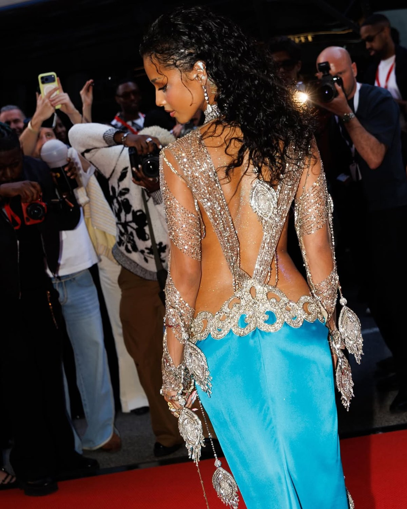

The Flavor Verdict: the 2027 Grammys built more rooms. Who gets into the main one?
Five new categories, a record-tying year for RAYE, Spanish and K-pop in the top races, and some loud absences. Our read on how inclusive these nominations really are.
The Recording Academy announced the nominees for the 69th Grammy Awards on Monday, 16 November 2026. The winners will be named on Sunday, 7 February 2027, at Crypto.com Arena in Los Angeles. On the surface it reads like a list of names. Underneath, it is a fairly clear statement about who the Academy thinks belongs at the centre of music right now, and who it would rather celebrate in a room of their own.
This year the Academy added five categories: Best Asian Pop Music Performance, Best Latin Song, Best Traditional Pop Vocal Performance, Best R&B Collaboration or Duo/Group Performance and Best Traditional Folk Album. That takes the total to 100. So the useful question isn't whether the Grammys are more inclusive. It's which kind of inclusion they are offering: more categories for more people, or more people in the categories that matter most.
The main roomWider than it used to be
Start with the good news, because there is plenty of it. RAYE leads the field with 11 nominations, which ties the record Beyoncé set in 2025 for the most nominations by a woman in a single year. They include her first nods for Album, Record and Song of the Year, for This Music May Contain Hope. and its single Where Is My Husband!. It's a striking turn for an artist who spent years fighting her old label just to release her own album.
Behind her, for the first time in Grammy history, the six most-nominated artists are all women: RAYE, Rosalía, Phoebe Bridgers, Miranda Lambert, Ella Langley and Olivia Rodrigo.
Language is less of a wall than it was, too. Rosalía has nine nominations for LUX, and she's the first woman nominated for Album of the Year with a Spanish-language album. That comes a year after Bad Bunny's Debí Tirar Más Fotos became the first Spanish-language album to win the top prize. One win can look like an exception. Two years in a row starts to look like a shift.
Jennie, meanwhile, is in Record of the Year with Dracula, the Tame Impala song she joined on a remix. That makes her only the second K-pop act ever nominated in the category, after her Blackpink bandmate Rosé last year with APT. And Tems, who has four nominations in total, isn't only in the African and global races. Her song What You Need puts her in Best R&B Solo Performance, up against Beyoncé, Kehlani, Victoria Monét and Jill Scott.
None of that is small. A Spanish-language album, a K-pop record and a Nigerian singer in a mainstream R&B race would have been unusual not long ago. This year they barely needed explaining.
The new roomsSpotlight or side room?
The five new categories are where the argument gets more interesting. The Academy's case is simple: more categories mean more artists get recognised, and entering a genre category doesn't stop anyone from also competing in the big four. CEO Harvey Mason Jr. made that point directly in July.
Recognition in a genre category and recognition in the General Field are not mutually exclusive.
Harvey Mason Jr., Recording Academy CEO, July 2026
There is real evidence for that. Jennie got into Record of the Year while two other K-pop acts, IVE and KiiiKiii, were nominated in the new Asian pop category. And the category has done something the general field probably never would: it put Filipino groups SB19 and BINI on the list, alongside Japan's LiSA and BABYMETAL with Polyphia. For smaller scenes, a dedicated category can be the difference between being seen and not being seen at all.
The other side of the argument came from the biggest group in the genre. BTS chose not to submit their album Arirang at all this year. In their statement, they said they wanted their music to be heard on its own terms rather than divided by region or language. Stray Kids stayed out too. The category requires a meaningful use of an Asian language, so an English-language single from a Korean act can't enter it. Critics worry that a category like this can quietly become the place where Asian acts are expected to compete, while the main races carry on as before.
Both sides have a point. A separate category is a door, and doors are good. But how much it counts depends on what happens next. If artists from these scenes keep showing up in the big four, the new categories will look like a step forward. If the big four stay closed to them and the side rooms fill up, critics will have been right.
AfricaStill mostly in its own room
Africa is a useful test case, because it has had its own category the longest. Best African Music Performance was introduced for the 2024 ceremony. Tyla won the first one with Water, Tems won in 2025 with Love Me JeJe, and Tyla won again this year with PUSH 2 START.
This year's five nominees are Asake's Gratitude, Wizkid and Asake's Jogodo, Tems' Big Daddy, Angélique Kidjo's Aye Kan (Are You Coming Back?) with Ayra Starr, and King Ayisoba and Rocky Dawuni's No Tradition, No Africa. In Best Global Music Album, Davido, Tems and Ayra Starr take three of the five spots.
There's a lot to celebrate in that list. Kidjo, one of the most decorated African artists in Grammy history, is on a song with a singer a generation younger. King Ayisoba has his first nomination, for a song built around the kologo, the two-stringed lute of northern Ghana, and Rocky Dawuni has his fifth. That's a very different kind of record from the polished pop around it, and it got in anyway.
But the wider picture hasn't moved much. OkayAfrica argued this week that African artists are still largely confined to the global categories. Apart from Tems' R&B nod, the continent's main stars are competing with each other rather than with everyone else. And the African category itself has a narrow map this year: no East African or Southern African act made the five. That's less about any one country doing well and more about how many African artists are submitting, and how many Academy members are voting with an ear for the whole continent.
SnubbedThe ones that didn't land
The most talked-about absence on the continent is Tyla. She won Best African Music Performance in 2024 and again in 2026. This year she got zero nominations, even though she submitted her album APop and several singles across more than ten categories, including Record and Song of the Year. Reports differ on whether she also entered the African category, so we'll leave that question open. What's clear is that she went for the main room this year, and the main room didn't let her in.

To be fair to the voters, nobody is owed a nomination, and the general field is the most crowded race there is. But Tyla's year is exactly the case the whole inclusion debate turns on. She's an African pop star who stopped being treated as a niche act some time ago. If the main categories are really open, she should be a natural contender there, not someone who only gets in through the African category.
She isn't the only big name left out. Rap is missing from the top three entirely: no rap artist or song is nominated for Album, Record or Song of the Year, a year after three rap albums were up for the biggest prize. Don Toliver came closest, with nominations for Best New Artist and Best Rap Album. According to Billboard, Drake didn't submit his 2026 albums at all, so his absence was his own choice. Harry Styles got no nominations for Kiss All the Time. Disco, Occasionally., and Stella Lefty's Boston and Gracie Abrams' Daughter From Hell came away empty too.
That matters for balance. Snubs aren't only about where an artist comes from. Some years the voters' taste simply moves, and this year it moved towards big, theatrical pop and away from rap. Tyla's miss fits a wider pattern, not just a regional one.
Closer to homeWhat it means for Kenya
For Kenyan readers, the most relevant fact is one that isn't on the list: no Kenyan act is nominated in the African category this year. At the same time, Kenya has been pushing to host the Recording Academy's planned Africa headquarters, a race that has also involved Nigeria and South Africa, and Academy officials visited Nairobi in September to mark progress on the plan. Grammy winners are chosen by the Academy's voting members, not a jury, so who submits and who joins matters as much as who makes the music. If the hub brings more East African artists into the system as submitters and voters, the next few lists could look quite different.
Our verdictProgress, with an asterisk
These are the most open Grammy nominations in years on language and gender. A Spanish-language album and a K-pop record in the top races, and a top six made up entirely of women, are real changes, and they deserve credit. The new categories are a fair way to bring more music through the door, and the Filipino nominations in Asian pop show what they can do.
But inclusion that mostly happens in separate categories is only half of it. The African category is on its fourth edition, and the continent's biggest names are still mostly competing with each other. The 2027 Grammys show the main room can open. The real test comes on 7 February, when we'll see whether the voters actually let more people into it.
Sources
- ABC7: 2027 Grammy nominations list
- NBC: 2027 Grammy nominations, full list
- The Fader: Here are all the 2027 Grammy nominees
- AP: Grammy nominations snub Harry Styles and hip-hop, while surprises include Dolly Parton
- W Magazine: The biggest snubs and surprises of the 2027 Grammy nominations
- Music Business Worldwide: RAYE leads 2027 Grammy nominations with 11 nods
- Deccan Chronicle (AP): Raye leads 2027 Grammy nominations with 11
- Latin Times: Rosalía makes Grammy history with LUX
- Remezcla: Bad Bunny makes history with Album of the Year win
- Korea Herald: Jennie lands Record of the Year nod
- Korea JoongAng Daily: Jennie, IVE and KiiiKiii earn Grammy nominations
- GMA: SB19 and BINI nominated for Best Asian Pop Music Performance
- The Hollywood Reporter: Grammys CEO responds to BTS
- TheWrap: Grammys CEO defends new Asian pop category
- Billboard: BTS will not enter Arirang for 2027 Grammy consideration
- NBC: BTS will not submit music for the Grammys
- Stereogum: 9 thoughts on the 2027 Grammy nominations
- Hollywood Life: 2027 Grammy nominees (R&B categories)
- OkayAfrica: The Grammys have a worrying trend for African music representation
- BellaNaija: Davido, Tems and Ayra Starr take 3 of 5 Best Global Music Album spots
- notjustOK: Nigerian artists nominated for the 2027 Grammy Awards
- Ghana News Agency: King Ayisoba, Rocky Dawuni earn Grammy nomination
- Graphic Showbiz: King Ayisoba earns first Grammy nomination, Rocky Dawuni his fifth
- Grammy.com: Best African Music Performance
- Guardian Nigeria: Tyla misses out on 2027 Grammy nominations
- Briefly: Tyla receives 0 nominations for the 69th Grammys
- notjustOK: Tyla's 2027 Grammy submissions
- Complex: Rap shut out of the Grammys' major categories
- Capital FM: Harry Styles snubbed in 2027 Grammy nominations
- AP: Kenya's quest to host Africa Recording Academy hub gets boost
- Kenyans.co.ke: Kenya moves closer to hosting Recording Academy Africa HQ